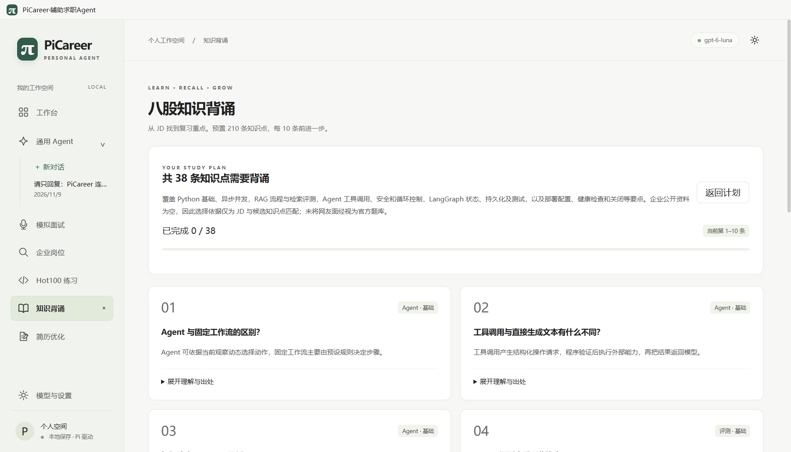

第 1 版文档主要依据项目验收记录与隔离界面。用户完成账号登录和模型配置后，本文补充一轮真实模型验收：在只保留配置与凭据的隔离副本中，实际调用已授权模型，覆盖通用 Agent、简历经历、模拟面试与知识计划。以下结果是一次运行观察，不是性能基准，也不代表所有账号、网络和模型都相同。
| 项目 | 实际值 |
|---|---|
| 产品版本 | PiCareer 0.1.15，Windows 10/11 x64，打包版 release/win-unpacked/PiCareer.exe |
| 模型 | 已保存的 OpenAI Codex 订阅授权；模型 gpt-6-luna。本文不记录账号、令牌或回调地址 |
| 数据隔离 | 复制真实用户目录中的 config、secrets、secret-index 与 Windows 加密所需的 Local State；删除聊天、简历、收藏、面试、计划等业务记录；不复制会话与材料目录 |
| 截图内容 | 提示词、项目概述、JD 与企业名均为本文编写的合成内容；截图中不包含真实简历、聊天或个人身份信息 |
| 时间 | 2026-11-09，Asia/Shanghai；网络走当前系统代理 |
Local State。这些文件只在本机临时目录使用，验收结束后删除；不进入文档、Git 或任何交付包。截图中的模型名是产品配置，不是账号信息。
在「通用 Agent」新建会话，输入“请只回复：PiCareer 连接正常。”。模型在约 2.6 秒内返回“PiCareer 连接正常。”，界面显示“已完成思考与工具调用”和“回答结束”，Context 估算为 约 1k / 272k tokens。这说明授权、模型选择、流式回复与轮次收尾链路均可用。
这次调用没有选择工作目录，因此只验证了通用对话与模型连接，没有验证文件或 PowerShell 工具。Context 是 Pi SDK 的估算值，不是订阅额度；272k 是该模型在模型目录中的容量描述，实际可用量仍受供应商与账户影响。
使用一段明确标注为“个人学习项目”的合成概述，不导入任何材料：
点击生成后，任务在约 21.3 秒完成，产出 3 条经历：
三条内容都能回到概述中的事实；“149 项”被保留，“未发表、未商业化”没有被改写成成果。界面显示“已生成并核验文稿，请核对个人事实后复制使用”，证据与修改说明单独折叠。这个结果符合“概述是用户声明，自动核验不能替代用户最终核对”的设计。
用合成 JD 启动一场面试。检索阶段没有取得可用公开资料：Bing 返回内容与查询词不匹配，DuckDuckGo 被公开地址校验阻止；界面没有伪造来源，而是显示“资料检索失败，将基于 JD 模拟”。模型随后生成 8 道主问题，首题在约 45 秒内出现（含检索等待）。
界面同时显示“主问题 1/8 · 追问 0/2”、参考资料为空与“没有来源支持的问题属于模拟题”。这说明面试模块在外部检索失败时仍能基于 JD 工作，但不会把问题包装成企业真题。45 秒包含失败检索的等待，不能当作模型首字延迟。
输入合成 JD“Agent 开发工程师，要求熟悉 Python、RAG、LangGraph、工具调用、评测与部署”，模型在约 8.1 秒内生成 38 条计划，并在计划说明中写明：企业公开资料为空，选择依据仅为 JD 与候选知识点匹配，未把网友面经视为官方题库。
对照第 1 版中的本地兜底结果：同一类 JD 在模型不可用时曾生成 141 条标签匹配计划。两者数量差异说明“模型复核”会显著收窄范围；它不是简单的标签匹配，也不能保证覆盖所有应复习的知识点。用户仍应结合岗位与自身薄弱项调整。

| 测试 | 输入／条件 | 观察 | 结论 |
|---|---|---|---|
| 通用 Agent | 最小回复，无目录 | 约 2.6 秒；Context 约 1k/272k | 连接、流式与收尾正常 |
| 简历经历 | 合成概述，无材料 | 约 21.3 秒；3 条，149 保留 | 事实约束生效 |
| 模拟面试 | 合成 JD；搜索失败 | 约 45 秒；8 题；回退提示可见 | 失败不伪造来源 |
| 知识计划 | 合成 JD；无企业资料 | 约 8.1 秒；38 条 | 模型选择明显收窄 |
对支持的直接含义：授权成功与模型可用已被真实验证；用户遇到“模型不可用”时，应先看授权阶段、模型选择与连接测试，而不是直接怀疑账号。其次，外部检索仍可能失败，面试、岗位与资讯都必须保留“回退到 JD／缓存／手动输入”的路径。最后，生成结果仍需用户核对；真实模型能遵守引用约束，但一次合成材料通过不代表任意真实项目都已核实。
整本 PDF 不适合作为一个检索片段：它跨越产品手册、技术架构和故障案例，任何一次提问都只能命中其中很小一部分。本文按章节切分，并为每个片段标注版本、来源、证据等级与页码范围；长章节再按二级标题细分为 section 片段。配套目录 knowledge/ 可直接校验并导入本地 SQLite FTS5 索引。
version、source_docs、evidence_level 与 page_start/page_end；没有来源的内容不进入知识库。case_ids 与 applicable_versions，避免把旧版本故障套到新版本。knowledge/
README.md 导入与维护说明
manifest.json 文档版本、PDF SHA-256、页数、片段统计
chapters.jsonl 按章节切分的片段
sections.jsonl 按二级标题细分的片段
schema.json 字段定义
validate.mjs 校验 ID、版本、来源、页码与重复
build-index.mjs 导入 SQLite FTS5
query.mjs 命令行检索
picareer-knowledge.sqlite 生成的知识索引当前基线生成 30 个 chapter 片段与 128 个 section 片段；导入 SQLite 后共 158 条记录。chapter 用于完整上下文，section 用于精确命中；两者共享同一版本、来源与页码范围。
| 字段 | 说明 |
|---|---|
id | 稳定 ID，例如 pc-0.1.15-p1c1；section 片段追加 -s01 |
doc_id | 本文档标识，固定为 picareer-manual-tech |
chapter_no / title / part | 章节号、标题与所属部分，用于展示与过滤 |
version | 适用产品版本，例如 0.1.15 |
source_docs | 该章依据的项目文档或代码路径数组 |
evidence_level | A 本次复现／源码核对，B 项目验收记录，C 产品说明与设计约定 |
page_start / page_end | 在最终 PDF 中的页码范围，便于人工回查 |
tags | 检索标签，如 安装、OAuth、岗位证据、简历事实 |
case_ids | 关联故障案例编号，仅案例章节使用 |
content | 清理后的正文；保留标题层级、列表与表格文字，不包含页眉页脚 |
node knowledge/validate.mjs，检查 ID 唯一、版本非空、来源数组非空、页码递增、正文非空与重复内容。node knowledge/build-index.mjs，把 chapters 与 sections 写入 SQLite，并建立 FTS5 全文索引。node knowledge/query.mjs "严格匹配 岗位证据"，返回片段 ID、标题、版本、页码与摘要。id、version、page_start 与 source_docs；回答中引用这些字段，而不是只复述文字。PDF 更新后，重新生成片段并递增 manifest.json 的 doc_version；旧版本片段保留，查询时按 version 过滤。若同一章节的内容发生变化，新增片段 ID 或更新 content_sha256，不要静默覆盖旧内容。每次导入前记录 PDF 的 SHA-256 与页数，确保片段页码与最终文件一致。